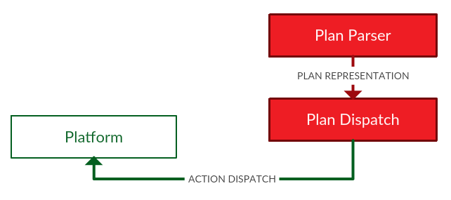

Plan Dispatch and Execution
The plan plan dispatch is ROSPlan is carried out through ROS messages. The actionDispatch ROS message, described in [[plan representation]], and the ActionFeedback ROS message described below. Once the plan has been processed, actions are dispatched by a plan dispatcher. The dispatcher internally handles action feedback, timeout, and failure. The dispatcher can return that a plan has succeeded, or that the plan has failed, which may trigger a replan.
The plan dispatch depends upon the plan representation, and should be modified together. ROSPlan includes implementations of the plan dispatcher: SimplePlanDispatcher and EsterelPlanDispatcher.
{% highlight cpp linenos=table %} /** * This file describes the class that dispatches a plan. */ #include "ros/ros.h" #include "rosplan_dispatch_msgs/ActionDispatch.h" #include "rosplan_dispatch_msgs/ActionFeedback.h" #include "rosplan_knowledge_msgs/KnowledgeItem.h" #include "rosplan_knowledge_msgs/KnowledgeQueryService.h" #include "PlanningEnvironment.h" #ifndef KCL_dispatcher #define KCL_dispatcher namespace KCL_rosplan { class PlanDispatcher { protected: /* action dispatch list (current plan) */ size_t current_action; /* dispatch state */ std::map